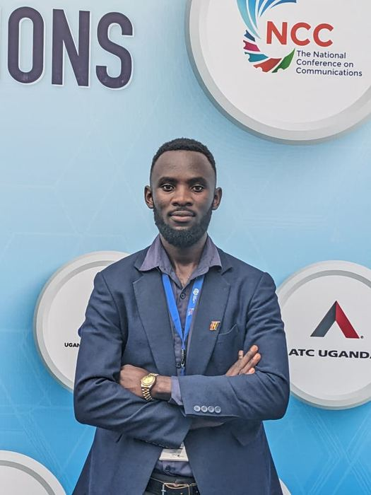

OUR VISION
THE FOUNDERS
Meet the people building Trume.
A team bringing together technology, product development, business growth, financial leadership and local market understanding.
CO-FOUNDER & LEAD DEVELOPER
Kainamura Darius
Technology vision and product development
Darius is a Ugandan software developer, technology enthusiast and entrepreneur. He is passionate about developing innovative digital solutions that address real-world challenges through software engineering and artificial intelligence.
He holds a Bachelor of Science in Computer Science from Mbarara University of Science and Technology (MUST). His expertise spans full-stack web development, mobile application development, database design and management, and emerging artificial intelligence technologies.
He also has practical experience in IT support, computer maintenance, software installation and configuration, basic networking, hardware and software troubleshooting, and technical user support.
His project work includes Truehome, MyShuttle — a university shuttle booking and management application on the Google Play Store — Report Sexual Harassment, AgroConnect, iSchoolVerse, Youth Salvation Ministry’s website and digital health records systems.
At Trume, Darius leads the technical vision and product development direction, overseeing digital platforms and technology infrastructure. His focus is turning ideas into practical, scalable and user-focused solutions, including building Truehome into a trusted property technology platform for Uganda and beyond.
CO-FOUNDER & BUSINESS LEAD
Ramzy Hadah
Business strategy, growth and partnerships
Ramzy is a Ugandan entrepreneur with a background in business administration, human resource management and digital innovation. He helps shape Trume’s vision, business strategy and growth direction.
He holds a Bachelor of Business Administration in Human Resource Management from Albukhary International University, Malaysia, and has worked across business operations, client services, digital marketing, communications and field research.
His experience includes work with the Uganda Bureau of Statistics, InstaPay Technologies and TARKiiZ Communications. At Trume, he focuses on making property discovery and management more accessible, transparent and convenient.

CO-FOUNDER & TECHNOLOGY LEAD
Amanya Micheal
Technology initiatives, product development and digital strategy
Amanya Micheal is a Ugandan Computer Scientist and software developer with a background in software engineering, information systems and digital innovation. He is a Co-Founder of Trume Company Limited, where he leads technology initiatives, product development and digital strategy.
He holds a Bachelor of Science in Computer Science from Mbarara University of Science and Technology (MUST). His experience spans software development, system integration, ICT operations, enterprise systems and cloud technologies. He currently works in ICT and Innovations at Natgas Uganda Limited and has contributed to several technology projects, including a published research project on agricultural market access.
Passionate about entrepreneurship and innovation, Micheal is focused on building practical, scalable technology solutions that address everyday challenges. At Trume, he is committed to driving the company’s technical vision and digital growth.
CO-FOUNDER & CHIEF FINANCIAL MANAGER
Maiga Nelson
Financial planning, risk management and business strategy
Maiga Nelson is a Ugandan entrepreneur with a background in business administration, accounting, finance and digital innovation. He is the Head of Finance at Trume Company Limited, where he helps ensure the company’s financial stability and supports strategic business decisions.
His responsibilities include financial planning and budgeting, revenue management, accounting and reporting, risk management, capital management and financial analysis.
He holds a Bachelor of Business Administration in Accounting Management from Kyambogo University, Uganda.
His professional experience spans business operations, client services, digital marketing, communications and field research, including work with the International Breastfeeding Action Network (IBFAN) and Makerere University School of Public Health.